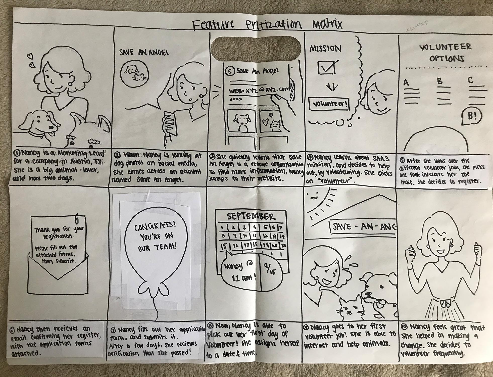
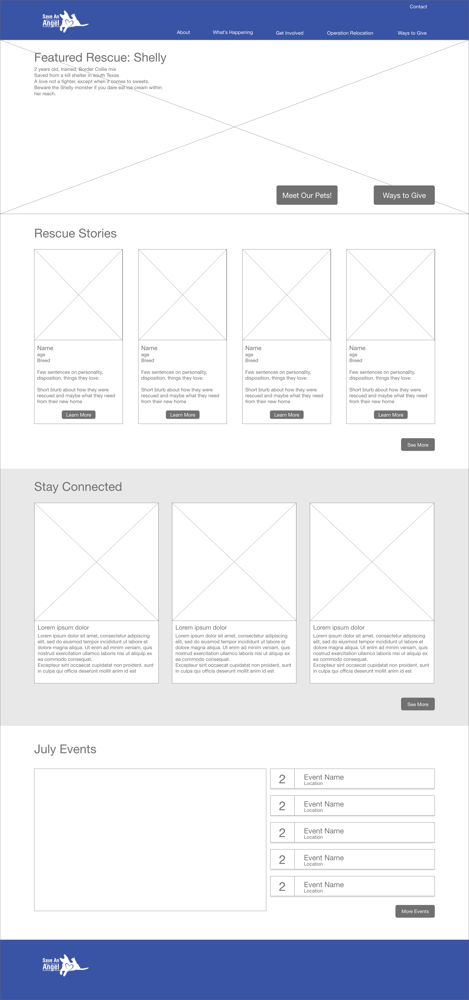

Website Redesign for Austin Non-profit
Save An Angel, 2019

Overview
Save An Angel is an non-profit organization based in Austin, TX involved in animal rescue, community outreach and rescue transportation. My team and I redesigned Save An Angel's outdated website to reflect its current goals and operation.
Goal
Increase overall community support for Save An Angel by:
- Providing convenient and clear information on paths to involvement and increasing the visbility of those paths
- Simplifying the processes of involvement
- Implementing stronger CTA
Constraints
- 3 week sprint
- 4 person team
- Reliance on stakeholder for
- No funding
My Role: UX/UI Designer
- Design & Testing: survey, stakeholder meetings, in-person interviews, usability testing current site, AB testing lo-fi prototype
- Analysis & Definition: affinity diagram, card-sorting, feature brainstorming and prioritization, user insight and problem statement
- Design: wireframed homepage, low to high-fidelity homepage
Stakeholder Interview
Our first step was to meet with our stakeholder: Jeremey Parks, the Executive Director of Save An Angel. From this meeting we were able to gain some valuable insights on Save An Angel's operation.


Business Model Canvas
We organized what we had learned about Save An Angel's operation into a business model canvas so we could keep in mind what and who the organization needs to be successful.

SWOT Analysis

- Site Strengths: emotionally appealing images
- Site Weaknesses: outdated, lack of information, inconsistent wordage, broken links
- Site Opportunities: clear information, clean up primary navigation, add page for Operation Relocation
Proto Personas
To begin empathizing with our target users, my teammate created two proto personas for the two groups Save An Angel's website serves: the no-kill agencies who receive the rescues, and those in the Austin community who volunteer for or donate to Save An Angel. These personas underscored the importance of the giving and receiving of information between the two groups and Save An Angel in order to coordinate mission efforts.
Receiving Organization
Donor


Survey Insights
Using the proto personas, I made a survey for each group. The receiving agencies did not respond to our survey, but we receieved ample responses from potential volunteers and donors.

Usability Testing Current Site
We tested the current Save An Angel site, specifically looking at the routes of donation and volunteering. From our feedback, we formed some goals for our redesign.


Affinity Diagram
As a team we organized the data from our in-person interviews into an affinity diagram and empathy map.

Empathy Map
Insights from Affinity & Empathy Maps
- Users' main goals for donating or volunteering:
- to "give back"
- to "make a difference"
- to spend time with animals
- to help animals
- Many users reported that their busy schedule limits their ability to volunteer
- Confusing sites, lack of information, and lengthy processes deter users them from getting involved online
Card Sorting
We card-sorted the navigation to make sure we had the most intuitive, efficient site layout.
Results of Card-Sorting
- Renamed some of tabs of the global nav to be the words for which users were specifically scanning (ex. "Donate", "Adoption")
- Added social media buttons and a search bar to top right corner to aid in finding information
- Got rid of the "Shop" because it was a small part of Save An Angel's mission and income
- Mirrored the global nav on the footer for easy access and added social media buttons
- Revamped the global nav by adding the only resource page to the "About" tab, and adding a "What's Happening" tab to highlight Save An Angel's blog, newsletter and events
Ideation
As a team, we used the "I Like, I Wish, What If" method to brainstorm potential features and ways the site could better serve its purposes.

Feature Prioritization
Top Ranking Features:
- A clear WHY and HOW to donate / volunteer
- Better ways to donate (ex. venmo)
- A map of the animals' journey
- Forms that autofill for returning users
Storyboard
Through storyboarding Nancy's experience, we were reminded of the importance of convenient, clear information and quick, simple processes. We have to make getting involved a manageable task so that those with busy schedules aren't deterred.
User Flows
With Nancy's experience in mind, we created a two user flows that would provide the necessary information and complete the task while remaining short and sweet.


User Journey Map

Through a user journey map, we found that low points of the emotional journey were locating important information/items and filling out forms. Opportunties to improve this are:
- Making the volunteer registration button highly visible
- Minimize form fills or show progress when filling out forms
- Make confirmation visually appealing
UI Style Guide
We based the color scheme off of Save An Angel's signature blue and the bright orange from its current website, and added shades of both colors for visual depth. The orange was a peppy contrast to the cool blue, and we employed this happy color for times when we hoped the user would be generous - for example, with the "Donate" CTA.

Homepage Wireframe
Desktop
Mobile
When wireframing Save An Angel's homepage, I kept in mind that the emotional appeal was crucial in inspiring users to get involved.
- The hero image features two calls to action: "Meet Our Animals" and "Ways to Give", and a blown up image of a cute animal to immediately engage those animal-loving heart strings.
- The "Rescue Stories" section gives the user personal information on some of Save An Angel's real animals and real success stories.
- "Stay Connected" displays Save An Angel's recent facebook feed, which our stakeholder said was updated regularly and reached a large portion of its community.
- "Events" lays out each of Save An Angel's upcoming events in clickable blocks which expand to show the where, when, and how of getting involved.
Low-Fi Prototype Testing Feedback
- Users wished that it said "Donate" instead of "Ways to Give" because that's the word for which their eye is scanning
- Users wanted “Adoption” to be in the main menu to make it easier to find
- Remove the Facebook feed. Don’t direct users of the website to social media, because that draws them away from the site - where they would potentially donate
- Improve the wording for the adoption process
- Probably don’t need to be able to preview the adoption form, and it is taking away from the actual call to action
Donation Flow
AB Testing Navigation Styles
We AB tested the 2 different navigation styles in both mobile and desktop.
Double Decker Horizontal Nav vs. Right-Side Vertical Nav
Vertical Swiping Nav vs. Hamburger Expanding Nav
AB Testing Feedback
- User 1 felt more they were more familiar with the right side vertical navigation on desktop.
- User 2 felt either desktop nav style could work, but to consider that the right side vertical menu decreases the screen space available for content.
- Users were split on which mobile nav they liked better. They liked the smoothness and hierarchy of the hamburger expanding nav, but the personality and swiping action of the vertical swiping nav.
High-Fi Prototype
Ultimately, for our hi-fi desktop we settled on a simple drop-down navigation because it is recognizable and comfortable for users, maintains the hierarchy, and conserves the most screen space compared to the other styles tested.
For our hi-fi mobile, we kept the playful swiping motion in the nav, but put the tab at the bottom of the screen to make it easy to reach with the thumb. We also integrated the drop-down hierarchy from the expanding hamburger version.
Donation Flow
Volunteering Flow
Adoption
Meet Our Animals

What to Expect When Adopting

Adoption Process and Fees

Check out the full hi-fi desktop and mobile prototypes:
Takeaways
- We were not able to get survey responses from many receiving agencies. We understood that for these busy and often small-staffed agencies, filling out our survey for free might not have been their highest priority. Because we were not able to get data on them, we chose to focus on our other proto-persona, the volonteer/donor, for which we received a lot of survey and interview data.
- Due to a mix-up, during a chunk of the design process we were not able to get in touch with our stakeholder. With the time constraints of the project we had to move forward with the information he had given us in our interview and the data gathered in our research. While out of touch we still sent our stakeholder reports of our progress, and once we were able to regain contact with him we had a meeting to present our work and get more information.
- I enjoyed this project and team immensely! I have great respect for the skill and character of all my teammates. Continuous communication of progress enabled us to move quickly as a unit, to help each other with any tasks or roadblocks, and to quickly clear up any confusion. It was inspiring to work with such diligent, respectful and talented people, and to create a product that could further animal rescue efforts.